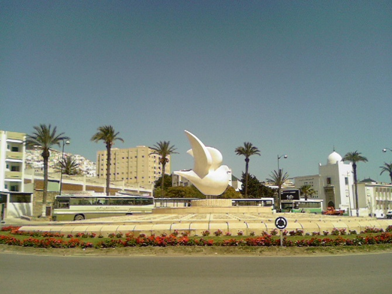
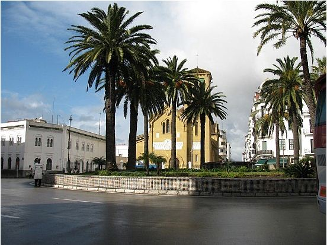
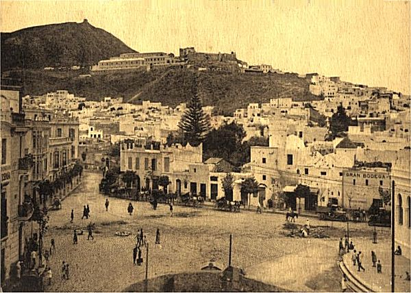
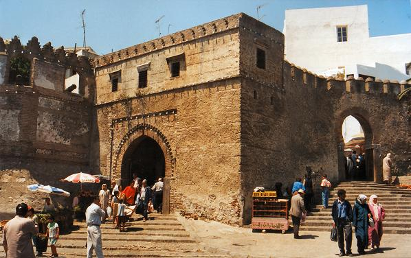

Accueil
Histoire
Ethnographie
Monuments
Economie
Culture et Art
Sites Naturels
Galerie
Contact
Bibliographie
TETOUAN
Le Site de Tétouan
Galerie

La Paloma Blanca

Plaza Primo Rivero

Plaza Jose Antonio tetuan - 1920

Porte Bab okla
Site de Tétouan
| copyrights © Karim El Madhoun 2012